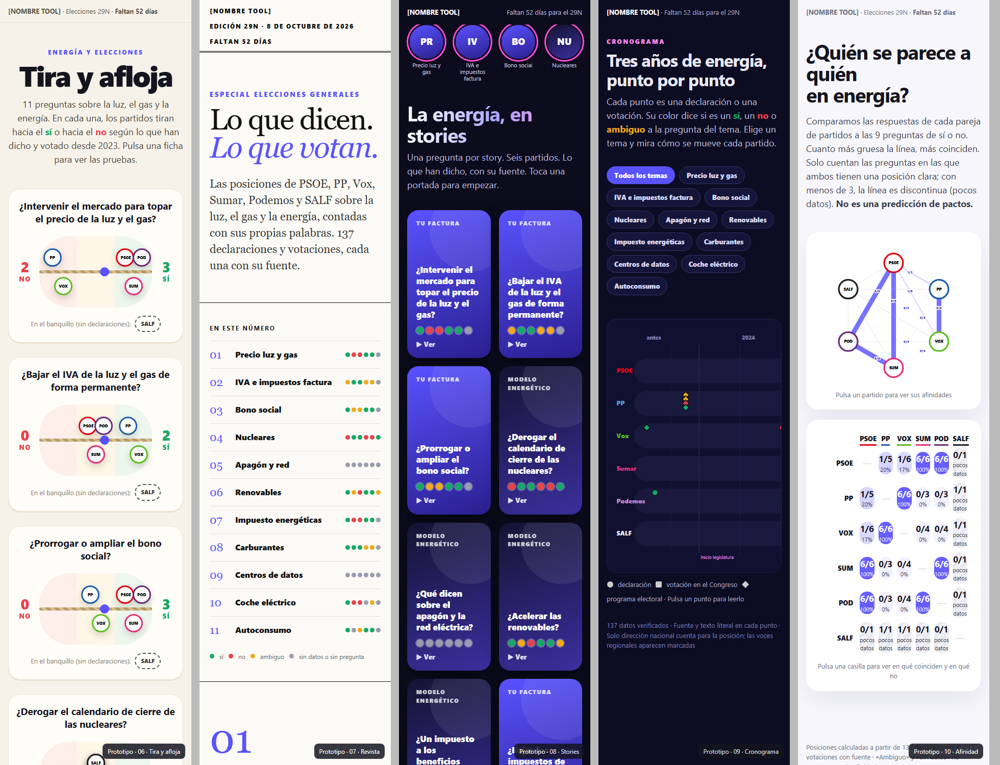
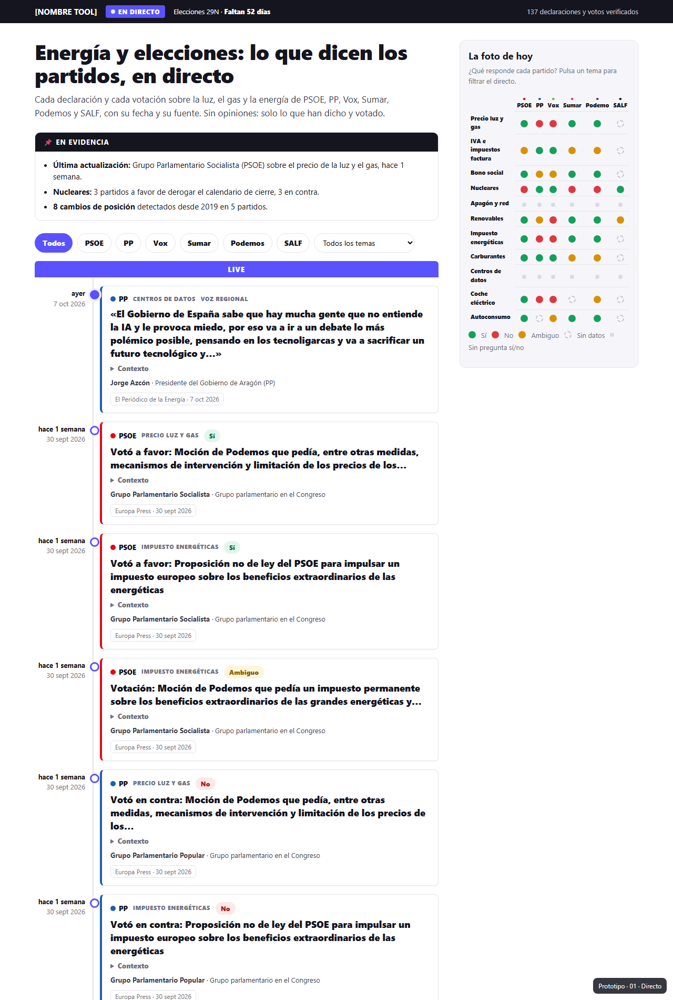
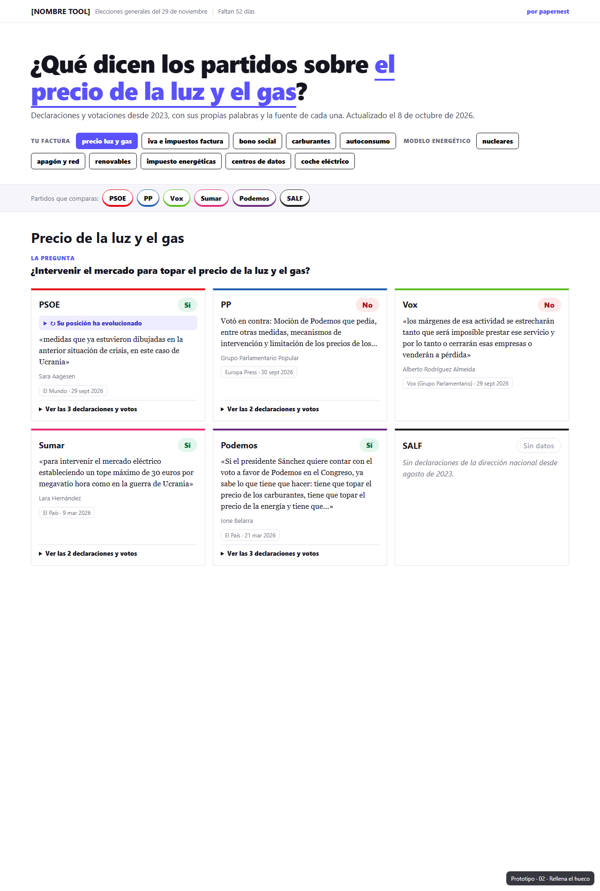
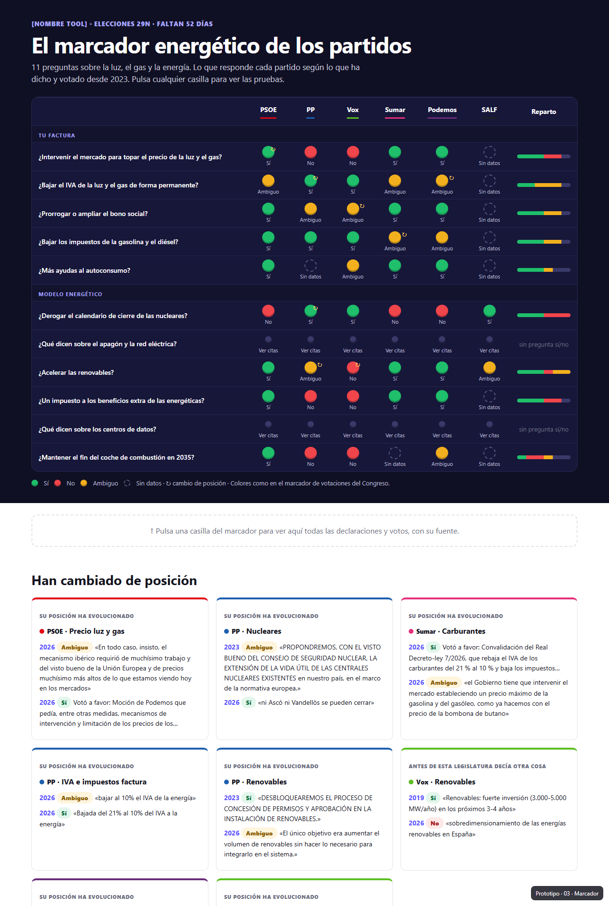
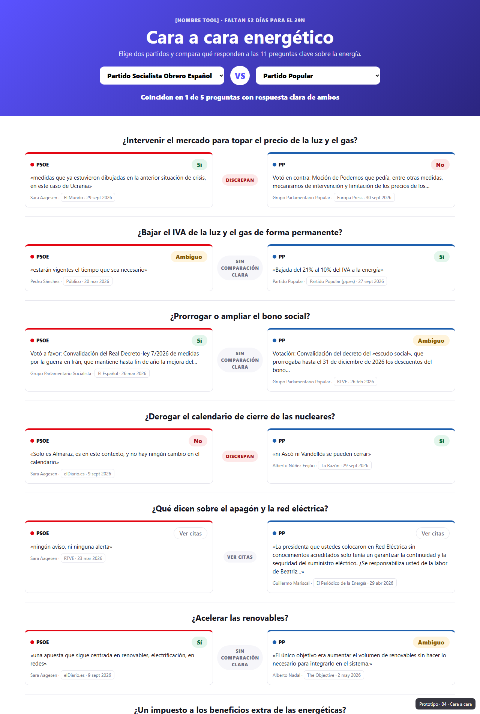
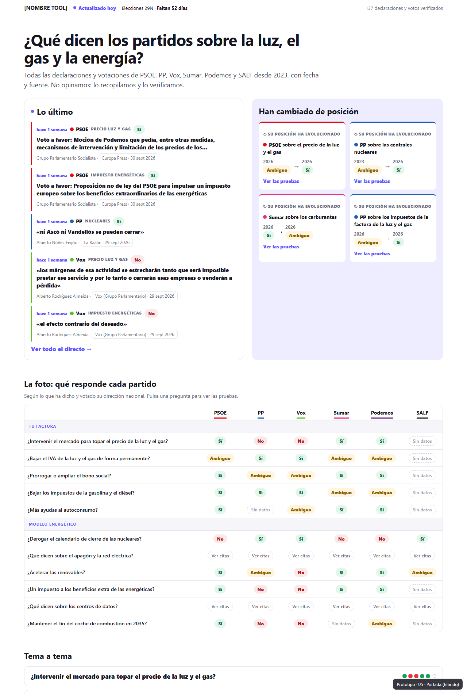
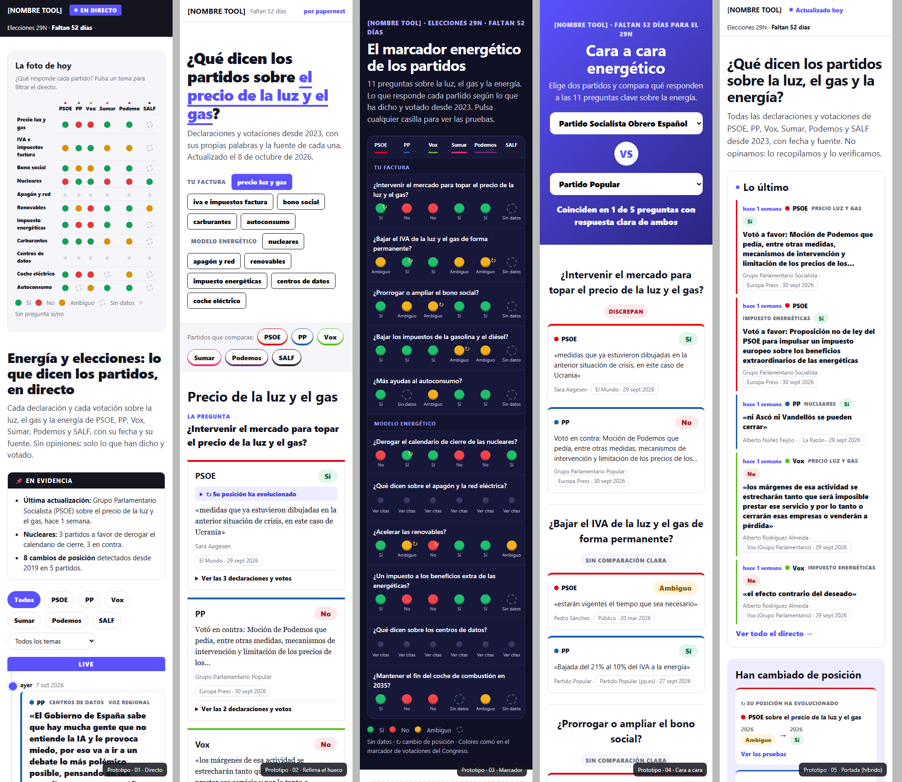

05 v2 · Portada
Parte dalla 05 e aggiunge:
- il titolo che cambia della 02, con le risposte dei 6 partiti subito sotto;
- il filtro partiti "a scheda elettorale", che vale per tutta la pagina;
- i dischi del Marcador nella "foto", con il pannello delle prove al clic;
- il modulo Cara a cara prima di "¿Eres periodista?".
Round 2 · 5 concept a mano libera
Qui c'era piena libertà visiva. Ogni concept prova un modo diverso di raccontare gli stessi dati. I punti fermi restano tre: citazione letterale con fonte sempre raggiungibile, nessuna foto dei politici (per i diritti d'immagine), font papernest.
| Concept | Metafora | Cosa sperimenta | Dove rende di più |
|---|---|---|---|
| 06 Tira y afloja | Tiro alla fune: i partiti tirano verso il Sí o verso il No | Animazione allo scroll, il "nodo" si sposta verso chi vince, panchina per chi non si è espresso | Cittadino, social, immagini da ripubblicare |
| 07 Revista | Magazine cartaceo: copertina, sommario, "spread" per tema | Domanda che resta fissa mentre scorrono le citazioni; tipografia serif gigante | Giornalista e lettura lunga; massima autorevolezza |
| 08 Stories | Instagram: una story per tema, un frame per partito | Player a tutto schermo, avanzamento automatico, frecce, link diretto #story-nucleares | Mobile, giovani, condivisione social |
| 09 Cronograma | Data journalism: ogni punto è una dichiarazione nel tempo | Corsie per partito, forme diverse per voto, dichiarazione e programma, eventi chiave (apagón, guerra con l'Iran, convocatoria), filtro per tema | Giornalista: mostra i cambi di posizione come nessun altro concept |
| 10 Afinidad | Rete e mappa di calore delle coincidenze tra partiti | Un dato nuovo calcolato dai nostri dati: "PSOE e Podemos coincidono in 6 su 6"; soglia minima di 3 domande per non sovra-interpretare | Titolo da articolo: "chi somiglia a chi sull'energia" |

1. Chi apre la pagina e cosa cerca
| Chi | Come arriva | Cosa vuole in 10 secondi | Cosa lo fa tornare |
|---|---|---|---|
| Giornalista (il target PR) | Google ("qué dice el PP de las nucleares"), il nostro pitch via email, un collega | Una risposta da citare ("il PP è a favore di…"), la fonte originale da verificare, la data | Novità: cosa è cambiato da ieri, cambi di posizione, contraddizioni = notizie |
| Cittadino o elettore | Google, social, l'articolo di un giornale che ci cita | "Cosa farebbe il partito X alla mia bolletta?", da confrontare con un altro partito | Il dibattito televisivo, la bolletta di gennaio |
| Crawl | Testo indicizzabile per tema e per partito, segnali di freschezza | Aggiornamenti frequenti, link dai media |
2. Cosa non funziona nella v1 dell'hub
- La matrice si legge male. "Precio luz y gas → PP: En contra" sembra dire che il PP è contro il prezzo della luz. Il badge si riferisce a una proposta che compare solo più giù nella pagina. Soluzione, applicata in tutte e 5 le proposte: righe in forma di domanda ("¿Intervenir el mercado para topar el precio de la luz?") e risposte Sí / No / Ambiguo.
- Niente segnala la freschezza. Solo una riga "Última actualización" in grigio. Sky e 29nov.es mettono in testa il tempo ("hace 10 minutos", "Faltan 52 días"). Senza un motivo per tornare non si crea l'abitudine.
- Il nostro differenziatore è sepolto. I cambi di posizione, che nessun concorrente ha, sono piccoli popup dentro 66 card.
- I filtri sono doppi e pesanti. 18 chip in due righe sopra una matrice che fa già da filtro.
- Lo scroll è ripetitivo. 11 temi × 6 card di fila. Il "tema a tema" serve per la SEO, ma non deve essere il percorso principale.
- Manca un "come citarci". È il gesto che vogliamo dal giornalista, e non lo facilitiamo.
3. La sequenza giusta (piramide invertida)
Una pagina di "dati politici" funziona come un articolo: prima la notizia, poi la risposta, poi le prove, poi l'approfondimento. Ogni livello è un clic in più, e chi si ferma al primo ha comunque avuto qualcosa da citare.
Principi trasversali:
- Progressive disclosure: badge → citazione → timeline → fonte. Mai tutto insieme.
- La citazione è il titolo (da Sky): il grassetto è sempre la frase letterale del politico, mai una nostra parafrasi. Questo protegge la neutralità.
- Il colore del partito identifica, non giudica (da 29nov.es): un bordo o un pallino, mai uno sfondo pieno.
- Contenuto nel markup: tutte le proposte tengono il testo nell'HTML anche quando è nascosto da tab o filtri, così Google lo indicizza.
- Mobile first: il giornalista spesso apre la pagina dal telefono, dal link di un comunicato o da WhatsApp.
4. Le 5 proposte
01 · Directo
Apri il prototipoIdea: la diretta di SkyTG24 applicata all'energia. Barra "EN DIRECTO", box "En evidencia" fissato in alto, timeline verticale con tempo relativo, la citazione come titolo. A destra una colonna sticky "La foto de hoy" con una matrice a pallini che filtra la timeline.

- È il formato che crea l'abitudine: si torna a vedere cosa è uscito.
- La sensazione di "live" e il tempo relativo sono perfetti in campagna.
- Ogni nuova riga è un potenziale pitch.
- Dopo il 29N la diretta "muore": la pagina dormiente sembra abbandonata.
- Il confronto tra partiti è secondario, solo nella colonna.
- Richiede aggiornamenti molto frequenti, altrimenti "EN DIRECTO" si ritorce contro.
02 · Rellena el hueco
Apri il prototipoIdea: l'hero di 29nov.es. "¿Qué dicen los partidos sobre ____?" si completa scegliendo un tema; sotto compaiono la domanda e una colonna per ogni partito con risposta, citazione e fonte. C'è un selettore "Partidos que comparas".

- Il più chiaro per il cittadino: una domanda, sei risposte.
- L'hero rispecchia la query Google ("qué dicen los partidos sobre…").
- Regge benissimo anche dopo le elezioni.
- Niente novità e niente "live": al giornalista manca il motivo per tornare.
- Un tema alla volta: non si vede il quadro d'insieme.
- È visivamente vicino a 29nov.es, quindi rischia di sembrare una copia.
03 · Marcador
Apri il prototipoIdea: il tabellone delle votazioni del Congreso. Fondo scuro, 11 domande per 6 partiti, dischi Sí/No/Ambiguo, barra di "reparto". Un clic su una casella apre sotto tutte le prove. In fondo, "Han cambiado de posición".

- È l'immagine più forte e "screenshottabile": un giornalista o un social lo ripubblica così com'è, con il logo papernest.
- Il quadro completo si vede in un colpo d'occhio.
- Il ↻ sui cambi di posizione salta all'occhio.
- Il formato tabellone rende tutto un sì/no anche dove la realtà è sfumata.
- Il fondo scuro stacca molto dal sito papernest.es: da verificare dentro il tema WordPress.
- Senza clic non si vede nessuna citazione, quindi c'è poco testo above the fold.
04 · Cara a cara
Apri il prototipoIdea: scegli due partiti (default PSOE contro PP). Per ogni domanda ci sono le due risposte affiancate e un verdetto "Coinciden / Discrepan". In testa c'è il punteggio "Coinciden en X de Y".

- Perfetto per le serate dei dibattiti televisivi: "Sánchez contro Feijóo sull'energia".
- "Coinciden en 1 de 5" è un titolo pronto per un pezzo.
- Formato molto condivisibile.
- Mostra solo 2 partiti alla volta: come hub generale è parziale.
- Il default PSOE contro PP può sembrare un favore agli altri partiti, o uno sgarbo: va gestito.
- Funziona meglio come modulo o pagina dedicata che come hub.
05 · Portada (ibrido)
Apri il prototipoIdea: la sequenza del punto 3 applicata così com'è.
Barra in alto con "Actualizado hoy", il countdown e il numero di dati verificati.
Poi due box affiancati: Lo último (mini-diretta di 5 voci, al massimo 2 per partito) e Han cambiado de posición (4 card "prima → dopo").
Sotto la matrice a domande Sí/No, poi "Tema a tema" in accordion con le prove, il box "¿Eres periodista?" con "Copiar cita", e in fondo la diretta completa.

- Soddisfa sia il giornalista (novità, cambi di posizione, citazione) sia il cittadino (la foto Sí/No).
- Regge dopo il 29N: "Lo último" diventa "Últimas actualizaciones" senza cambiare struttura.
- "Copiar cita" chiede al giornalista proprio il gesto che vogliamo.
- È la più densa: va curato il ritmo verticale.
- Ha meno "effetto wow" del Marcador o del Directo.
- Ha più blocchi da tenere aggiornati.
5. Confronto
| Criterio | 01 Directo | 02 Hueco | 03 Marcador | 04 Cara a cara | 05 Portada |
|---|---|---|---|---|---|
| Motivo per tornare (abitudine del giornalista) | ●●● | ● | ●● | ●● | ●●● |
| Risposta in 10 secondi | ●● | ●●● | ●●● | ●● | ●●● |
| Valorizza i cambi di posizione | ● | ● | ●●● | ● | ●●● |
| Facilità di citare / ripubblicare | ●● | ●● | ●●● | ●●● | ●●● |
| Vita dopo il 29N | ● | ●●● | ●● | ●● | ●●● |
| SEO (testo per tema nel markup) | ●● | ●●● | ●● | ●● | ●●● |
| Carico di manutenzione | alto | basso | basso | basso | medio |
05 Portada come hub, più due moduli presi dalle altre
- Hub = 05 Portada. È l'unica proposta che segue la sequenza novità → risposta → prove → approfondimento senza sacrificare nessuno dei due lettori.
- Dal 03 Marcador prendere la matrice in versione "tabellone" come stile della "foto", con dischi e ↻ ben visibili, ma su fondo chiaro. Esportarla anche come immagine PNG per il kit stampa: è il formato che un giornalista ripubblica.
- Dal 01 Directo prendere la timeline completa in fondo alla Portada, con i filtri.
- 04 Cara a cara come pagina o modulo separato, da spingere nelle serate dei dibattiti (sono un gancio PR a sé).
- 02 Hueco non serve come hub, ma la sua logica "una domanda, sei risposte" è già quella delle sezioni "Tema a tema".
6. Decisioni aperte per il team
- Colori Sí/No. Ho usato verde, rosso e giallo, come il tabellone delle votazioni del Congreso: è una convenzione nota e leggibile in un istante. Il rischio è che verde e rosso si leggano come "buono" e "cattivo". L'alternativa neutra è una scala del viola primario con due tonalità più il grigio, meno immediata.
- Colori dei partiti: sono approssimativi e vanno verificati. Se preferite la massima neutralità si possono togliere, lasciando solo il nome del partito.
- Nuovo campo dati "titular". 29nov.es mette sopra ogni citazione una frase semplice ("Reducir los impuestos sobre la luz"). Per i voti renderebbe la diretta molto più leggibile del testo della mozione. Costa una riga in più per ogni dichiarazione nella skill di aggiornamento.
- "EN DIRECTO" sì o no. È forte, ma è una promessa: va mantenuta con aggiornamenti almeno ogni 2-3 giorni in campagna, altrimenti è meglio "Actualizado hoy".
- Widget embed per i media (fase 2): un iframe della "foto" che i giornali inseriscono nei loro articoli, con un link a noi. È il backlink più naturale che esista.
Mobile
Da sinistra: 01 Directo, 02 Hueco, 03 Marcador, 04 Cara a cara, 05 Portada (375px).

I prototipi sono generati da scripts/hub_proposals.py con i dati reali di data/statements/. Sono standalone e non vanno incollati in WordPress: una volta scelta la direzione, il layout va portato in build.py con i vincoli WP (prefisso classi, JS con addEventListener).